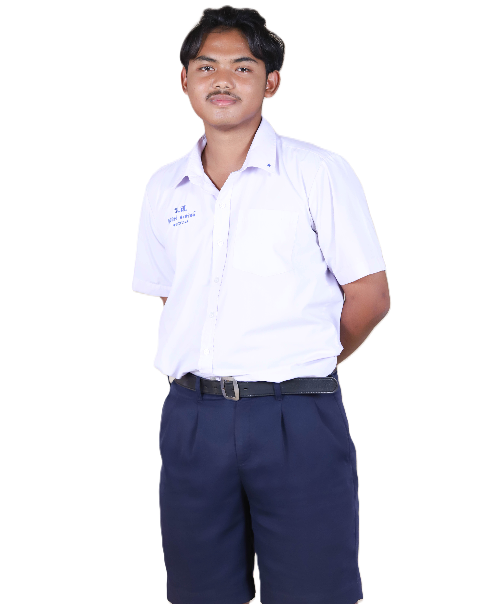

About me
ชื่อ-นามสกุล : นายฐิติวัชร์ สงสวัสดิ์
ชื่อเล่น : ไผ่
อายุ : 17-18
วันเดือนปีเกิด : 5 ธันวาคม 2550
งานอดิเรก : อ่านนวนิยาย เล่นเกม ดูสื่อต่างๆ เขียนเว็บไซต์ สืบค้นในสิ่งที่ตัวเองสนใจ ทำอาหาร
My goal
เป้าหมายของผมในอนาคต หลังสำเร็จการศึกษา ผมตั้งใจจะทำงานด้าน
Software Development หรือ cyber security ผมต้องสร้างเทคโนโลยีหรือนวัตกรรมที่สร้างประโยชน์ต่อสังคม ไม่ว่าจะเป็นด้านการอำนวยความสะดวกให้กับผู้คนในชีวิตประจำวัน หรือการเสริมสร้างความปลอดภัยให้กับชุมชนและสังคมโดยรวม
